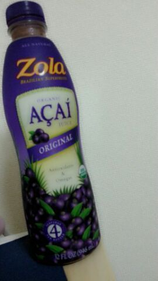
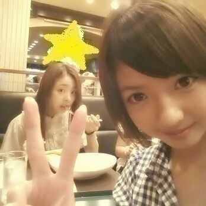

こんばむわぁぁ♪
Rottyです^^
今日は 都内に出て
お風呂に設置する浄水器を
見てきました \(^▽^)/
とゆ-かねぇ〜
もう７月だよぉぉ♪
サマーーーー )))
早いですねぇ〜。
今月の23日で18歳であります〃▽〃
高校生last ！！
今年の夏は どうなるかなぁ〜？
皆さんは何か予定入ってたりするの？
そ-いえばねっ
ここ最近 まあや♪のお母さんが
広島からまあやのもとに来ててね
まあやのお母さんが
これ...くれたの(ω)

今話題の飲み物でね
牛乳と割って飲むんだあ\(*´▽`*)/
健康にいい成分がたっくさん
含まれてて これを飲んで元気になるの！
ここ３日 毎日 朝ごはんと
一緒に飲んでます！
まあやに お礼の文を送ったらね
まあやから
「母ちゃん ろってぃ-のこと
大好きだから、買いたくて買ったから
気をつかわないでぇ〜(*^^*)」
ってきたってばよぉ〜
グハハッハッハ。
こりゃ嬉しいなあ〜(〃▽〃)笑
まひろも まあやのお母さん
大好きで 本当久々に顔合わせれて
嬉しかった(^ω^)
でもすっぴんで申し訳なかったです...
チーン。
まあやお母さんに似てる(*^^*)
そして まあやは本間 かわいい。
ぴょん.
いくつかしつ(^3^)/もん返しだお〜
☆何か緊張を取る方法知ってる？
★心の中で余裕ぶる。
ほんで笑ってごまかす ^^
☆お弁当うまそうだ-^ ^
ちゃんと俺の分残してる？
★ん〜 まひろの食べかけでも
良かったら食べてください。
☆扇風機のロッティーは本当に
ぼぉ〜〜〜〜〜〜としている(笑)
普段もあんな感じなん？
★う〜 ちょこちょい
ぁあやって ぼ-っとしてるらしい
です(*´ω`*)/
☆また質問してもいい？
★してくださいしてください〜//
そのためにこんなに
質問返ししてるんですからねぇ〜(*^^*)
☆濃いチークって可愛いのでしょうか？
★ただチークだけが濃かったり
すると 逆に老けて見えちゃうけど
その人のキャラでやってる場合あるやん？
ファッションから個性的で
メイクとかも 個性的な感じで
それでチークも
これでもかあ！って位濃くしてる人は
よく見るけど、
それはその人の個性だし
いいと思います＼(^o^)／
☆おお７月！ 夏祭りの時期ですね(*^^*)
ロッティーはどんな屋台が好きですか？
★祭りとか楽しみたいですよねぇ〜
どんな屋台かあ〜
林檎飴 とか ラムネ とか好きかなん*^^*
最後に 蜜蜂マーヤちゃんと
ハイッ チーズ=・▽・=

あれ？ はさまれた。
以上っ ろってぃ-でした☆
のし！